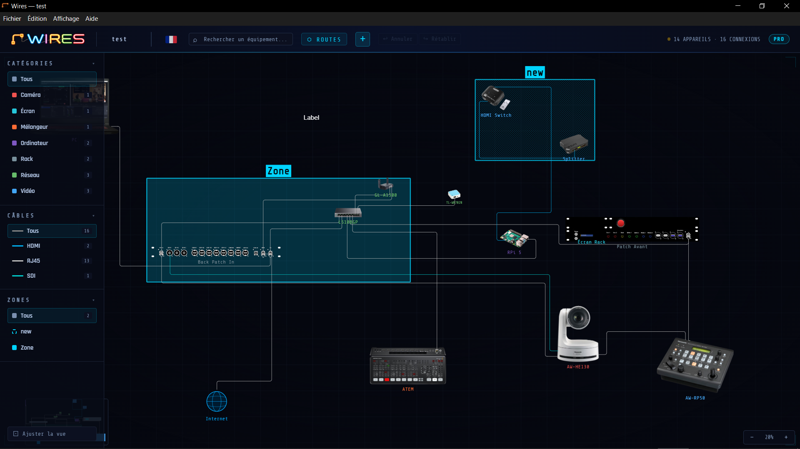
À propos de Wires
Wires est un outil de documentation et de planification pour le routage des signaux audio/vidéo/lumière. Il vous permet de modéliser l'architecture technique d'une installation en plaçant des appareils sur un canevas, en les connectant avec des câbles et en organisant ces connexions en routes de signal logiques et visuels.
À qui s’adresse-t-il ?
Wires est conçu pour les techniciens audiovisuels, les streamers, les intégrateurs système, les entrepreneurs en son et éclairage, les responsables techniques d’église ou d'événements, et tout professionnel ou amateur impliqué dans la conception, la documentation ou l'exploitation d'architectures de signaux complexes.
Fonctionnalités clés
- Appareils personnalisés : importez une image de votre appareil ou choisissez une forme géométrique, puis ajoutez autant de ports (points de connexion) que nécessaire pour la rendre interactive.
- Canevas : plan où vous pouvez positionnez vos appareils librement.
- Câbles : nommez les appareils et connectez-les ensemble, puis catégorisez chaque connexion.
- Routes de signal : regroupez les câbles en routes logiques pour documenter le trajet complet d'un signal, de la source à la destination.
- Zones : définissez des zones sur le canevas pour structurer le plan par scène, rack ou zone technique.
- Textes : annotez le plan avec du texte libre pour ajouter des informations contextuelles.
- Exports : générez une exportation HTML interactive, un PDF ou une pack list prête à l'emploi.
- Interface multilingue : disponible en anglais, français et espagnol.
Points forts
Visualisation de l'image de l’appareil
Chaque appareil peut être représenté par une image ou une forme géométrique colorée qu’il représente. Importez vos propres visuels ou sélectionnez une forme pour rendre le plan immédiatement lisible par toute l’équipe, même sans connaissance préalable du projet.
Animation des signaux
Lancez une animation sur n’importe quelle route : un point lumineux se déplace le long des câbles de la source à la destination. Cette visualisation permet de vérifier d'un seul coup d'œil le trajet complet du signal, sa direction et l'absence de toute rupture de chaîne.
Exportation HTML interactive
Le plan peut être exporté sous forme de fichier HTML autonome qui reproduit fidèlement le canevas, les images des appareils et la liste des routes. Il peut également être publié sur une page web afin de présenter et d’expliquer clairement votre configuration.
Cas d'utilisation
- Documentez le routage audio d'un concert : consoles, stageboxes, amplificateurs et moniteurs, en suivant chaque bus de la scène au public.
- Cartographiez l'infrastructure vidéo d'un studio de broadcast : caméras, mélangeurs, routeurs, encodeurs et moniteurs - avec une exportation HTML à partager avec l'équipe de production ou le client.
- Concevez la configuration audiovisuelle d’une église : sonorisation, écrans, caméras, régie vidéo, diffusion en direct et retours de scène.
- Organisez la configuration audiovisuelle d’un créateur de contenu pour YouTube, Instagram ou le streaming en direct : caméras, microphones, éclairage, ordinateur, interface audio, écrans et équipements réseau.
- Concevez l'architecture d'une salle de conférence : sources HDMI, matrices, écrans et systèmes de vidéoconférence - en utilisant l'animation pour vérifier que chaque signal atteint sa bonne destination.
Versions Free et PRO
La version gratuite est limitée à 10 appareils
Un export PDF en 75 dpi.
Les sous-projets sont réservés à Wires PRO.
Toutes les autres fonctionnalités sont disponibles dans les deux versions.
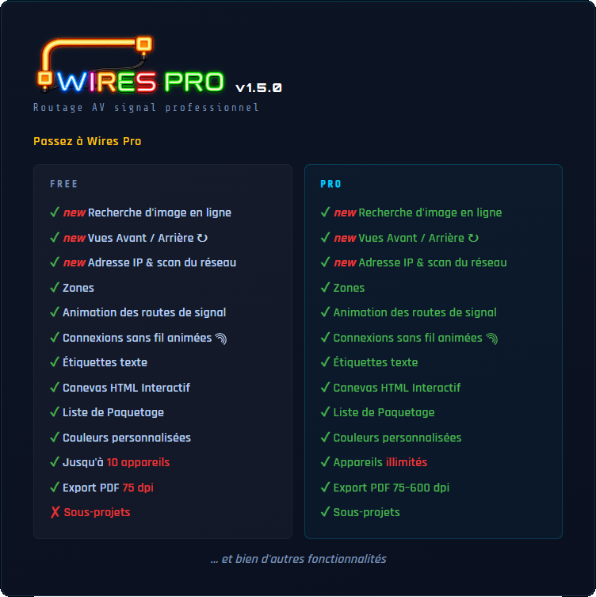
Guide de démarrage rapide
Étape 1 — Créer ou ouvrir un projet
Lorsque Wires se lance, un écran de démarrage répertorie vos projets récents.
Cliquez sur + Nouveau projet pour le créer.
Étape 2 — Ajoutez votre premier appareil
Cliquez sur le bouton + dans l'en-tête → ⬡ Nouvel appareil .
La fenêtre Ajouter un appareil s'ouvre :
- Entrez le nom, choisissez une catégorie et une image (photo ou forme géométrique). La fenêtre Configuration image et points de connexion s'ouvre — configurez-la (voir Appareils). Cliquez sur Placer sur le canevas.
Étape 3 — Créer son câble pour connecter deux appareils
Cliquez sur le bouton + dans l'en-tête → ⤢ Nouveau câble . Une bannière en haut apparait et vous guide. Les points de connexion présents sur les appareils apparaissent. Cliquez sur un point de connexion sur l’appareil SOURCE, puis cliquez sur un point de connexion sur l’appareil DESTINATION (même type de câble requis). Le câble est tiré automatiquement. Exceptions : USB et audio analogiques acceptent des connecteurs mixtes.
Étape 4 — Créer une route de signal
Une route de signal trace le chemin d'un signal à travers une chaîne de câbles et l'anime sur le canevas. Lorsque vous créez un câble, une fenêtre apparaît :
- choisissez Créer une nouvelle route ou Ajouter à une route existante — voir Routes de signal pour le détail complet.
ℹ Un câble sans route est automatiquement supprimé si vous annulez la fenêtre.
Étape 5 — Organiser la vue
Faites défiler la molette pour zoomer. Cliquez avec le bouton gauche et faites glisser la souris sur une partie vide du canevas pour déplacer la vue.
Pour dessiner un cadre de sélection et sélectionner plusieurs appareils, faites Alt + clic et glisser.
Appuyez sur F pour afficher tous les appareils du canevas.
Étape 6 — Nommer et enregistrer
Cliquez sur le nom du projet dans l'en-tête supérieur pour le renommer. À la fermeture du programme, une boîte de dialogue MODIFICATIONS NON SAUVEGARDÉES apparaîtra. Cliquez sur Enregistrer sous… pour choisir l'emplacement et le nom du fichier.
Étape 7 — Changer la langue de l'interface
Wires est disponible en trois langues : anglais, français et espagnol. Cliquez sur le drapeau du haut pour changer de langue à tout moment. L'interface se met à jour immédiatement. D'autres langues seront ajoutées dans les versions futures.
Vue d’ensemble de l’interface
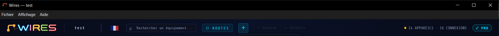
Barre d'en-tête
L'en-tête contient le nom du projet, les commandes de navigation et une icône de drapeau sur le côté droit. Cliquez dessus pour changer la langue de l'interface entre l'anglais, le français et l'espagnol.
| Élément | Fonction |
|---|---|
| Logo / WIRES | Lien vers le site www.alkoda-wires.com |
| Nom du projet | Cliquez pour renommer le projet |
| Drapeau | Cliquez pour changer de langue |
| Rechercher du matériel... | Rechercher des appareils sur le canevas |
| Bouton ROUTES | Ouvrir le panneau Routes de signal |
| Bouton + | Liste déroulante : ⬡ Nouvel appareil , ⤢ Nouveau câble ou T Nouveau texte , ▭ Nouvelle zone . |
| Boutons ↩ Annuler / ↪ Rétablir | Parcourez l'historique des modifications (10 niveaux) |
| N APPAREILS / N CONNEXIONS | Nombre actuel d’appareils et de câbles sur le canevas |
Barre latérale gauche
- Trois sections de filtre — chaque section possède son propre bouton Tous pour réinitialiser indépendamment :
- Catégories — isole les appareils d'un type et fait apparaître leurs connexions en fantôme.
- Câbles — n'affiche que les appareils reliés par le type de câble sélectionné.
- Zones — n'affiche que les appareils situés dans la zone sélectionnée.
- Les trois filtres s'appliquent simultanément — voir Bibliothèque et catégories pour le détail complet.
- La barre latérale se rétracte automatiquement — survolez pour l'ouvrir, B pour l'épingler.
Panneau d'information de droite :
Câbles ou Appareil
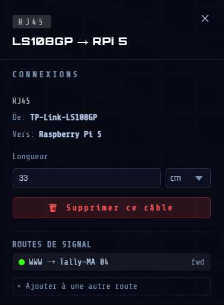
S'ouvre automatiquement lorsque vous cliquez sur un nœud ou un câble. Affiche les détails, les connexions et les actions pour l'élément sélectionné. Fermez avec le bouton ✕, Échap ou en cliquant sur un canevas vide.
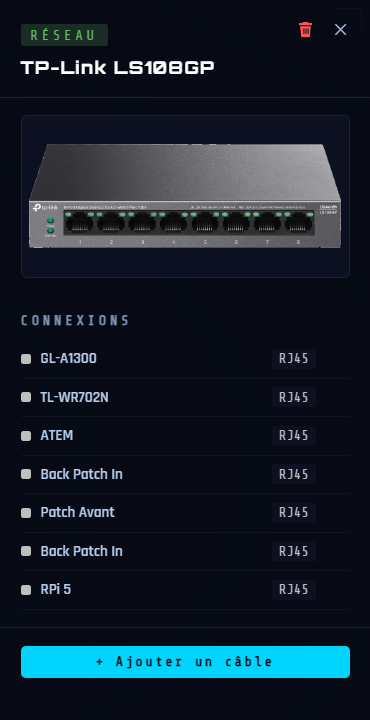
Routes de signal
Ouvert via le bouton ⬡ ROUTES dans l'en-tête. Affiche toutes les routes de signal créées dans le projet : leur nom, les segments de câbles qui les composent et leur sens de circulation. Depuis ce panneau, vous pouvez lancer ou arrêter l'animation de flux sur une route, réordonner les segments, inverser le sens d'un segment et créer des chemins alternatifs (splits). Le panneau peut rester ouvert pendant que vous travaillez. Un premier clic sur le canevas vide ferme le panneau sans arrêter les animations en cours ; un deuxième clic les arrête.
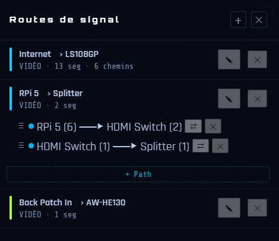
Mini-carte
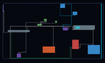
Coin inférieur gauche. Affiche une vue simplifiée du canevas. Cliquez ou faites glisser n'importe où dans la mini-carte pour naviguer.
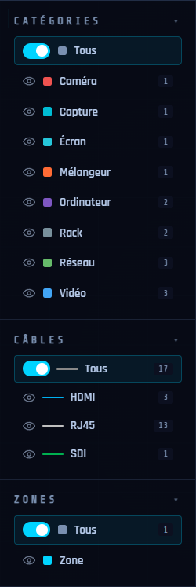
Projets
Créer un nouveau projet
- Ctrl + N (via le menu Fichier)
- Écran de démarrage → bouton + Nouveau projet .
- S'il existe un travail non enregistré, une boîte de dialogue demande quoi faire en premier.
Ouvrir un projet
- Ctrl + O ou Fichier → Ouvrir
- L'écran de démarrage répertorie les 10 projets les plus récents (cliquez pour ouvrir)
Sauvegarde automatique (récupération après incident)
Wires enregistre automatiquement un fichier de session 3 secondes après la dernière modification.
Si l'application plante ou est fermée de force, le prochain lancement affiche une entrée "● dernière session " dans l'écran de démarrage.
ℹ Il s'agit uniquement d'une récupération après incident : elle ne remplace pas la sauvegarde manuelle.
Importer un projet
ℹ Cette fonctionnalité est réservée à la version Wires PRO.
- Permet d'intégrer un fichier .wires existant dans le canevas actuel sous forme de bloc indépendant (zone de sous-projet). Fonctionnalité PRO — voir Sous-projets.
Appareils
Ajouter un appareil
Cliquez sur le bouton + dans l'en-tête puis ⬡ Nouvel appareil .
- Une boîte de dialogue s'ouvre. Remplissez le nom. Modifiez le nom court et la catégorie si besoin.
- Dans la zone image, importez un PNG, JPG ou WEBP… — ou cliquez sur une forme géométrique (rectangle, cercle, triangle, carré).
- La fenêtre Configuration de l'image s'ouvre automatiquement — configurez-la (voir ci-dessous).
- Cliquez sur Placer sur le canevas pour placer l'appareil.
ℹ La version gratuite est limitée à 10 appareils. Wires PRO supprime cette limite.
Fenêtre « Ajouter un appareil »
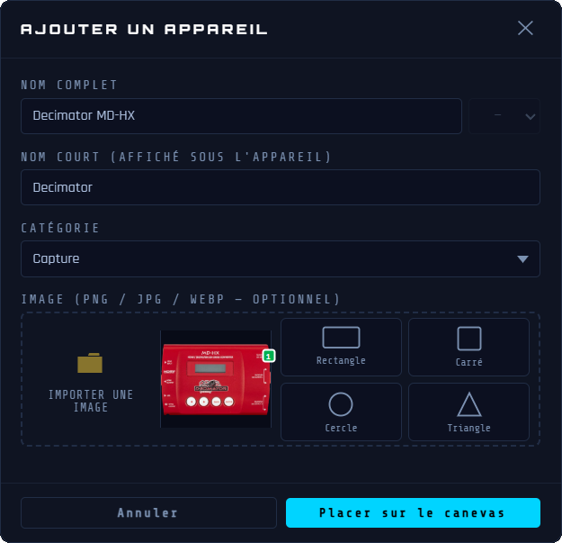
| Champ | Remarques |
|---|---|
| Nom | Nom complet de l'appareil : obligatoire. |
| Nom court | Étiquette courte affichée sur le canevas. Rempli automatiquement à partir du nom. Modifiable. |
| Catégorie | La catégorie est détectée automatiquement et modifiable si une marque reconnue est présente dans le nom de l'appareil. Elle détermine la couleur dans la barre latérale gauche. Sélectionnez Personnalisé… pour créer une nouvelle catégorie. |
| Zone d'image | Cliquez sur la zone pour importer un PNG, JPG, WEBP... Ou cliquez sur l’un des 4 boutons de forme (rectangle, cercle, triangle, carré) — la forme adopte la couleur de la catégorie. |
Fenêtre Configuration de l'image — étape par étape
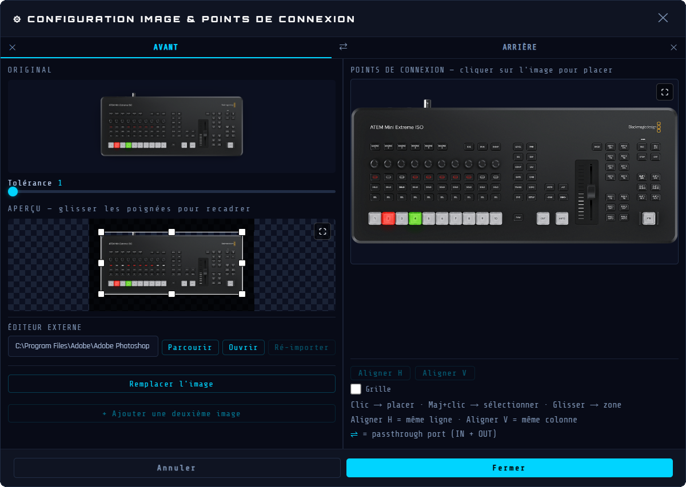
Pour modifier une image d’un appareil existant, consultez le Modifier l’image d’un appareil.
Cette fenêtre comporte trois zones : Gauche Haut = image originale | Gauche Bas = résultat supprimé en arrière-plan avec poignées de recadrage | Droite = éditeur de port.
ℹ Avec une forme géométrique, les étapes 1 et 2 ci-dessous ne s’appliquent pas. Passez directement à l’étape 3.
Étape 1 — Supprimez l'arrière-plan
- L'arrière-plan est automatiquement supprimé lors du chargement de l'image.
- Utilisez le curseur Tolérance pour affiner
- Le résultat est mis à jour en direct lorsque vous faites glisser le curseur.
- Cliquez sur ↺ Réinitialiser pour revenir à la tolérance par défaut.
- Si le résultat n'est pas satisfaisant, utilisez l'éditeur externe : saisissez le chemin de votre éditeur d'images, cliquez sur Ouvrir, éditez le fichier, puis réimportez-le.
Étape 2 — Recadrez l'image
- Un rectangle de recadrage apparaît automatiquement autour de l'appareil.
- Faites glisser l'une des 8 poignées (coins et bords) pour ajuster la zone de recadrage.
- Faites glisser le centre du rectangle pour déplacer toute la zone de recadrage.
- Recadrez de manière serrée : évitez les grandes marges vides autour de l'appareil.
Étape 3 — Ajoutez des points de connexion (ports)
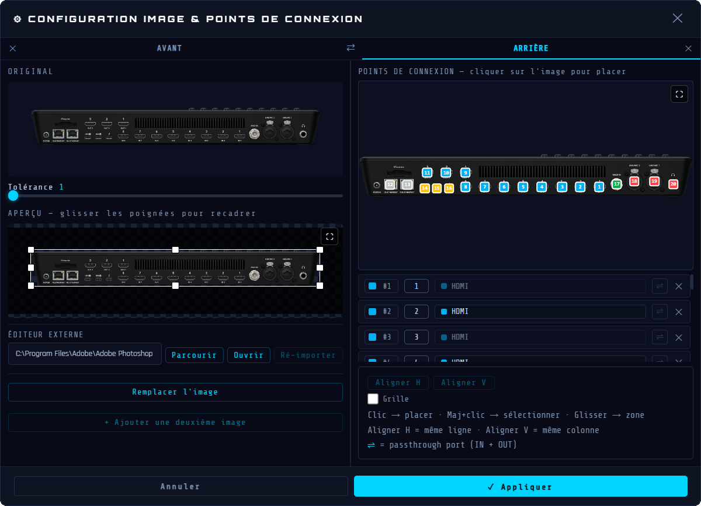
La zone de droite affiche l'image recadrée de l'appareil. C'est ici que vous placez les points de connexion qui représentent les connecteurs physiques.
ℹ Avec une forme géométrique, il est impossible de placer un point de connexion hors de la forme.
| Action | Effet |
|---|---|
| Cliquez sur la zone d'image vide | Ajoutez un point de connexion à cette position exacte. Type par défaut : HDMI. |
| Faites glisser sur une zone d'image vide | Dessinez un rectangle de sélection pour sélectionner plusieurs points existants à la fois. |
| ⇧ + glisser | Ajoutez à la sélection existante sans l'effacer. |
| Double-cliquez sur un point de connexion | Mettez en surbrillance sa ligne dans la liste des ports ci-dessous et ouvrez la liste déroulante des types. |
| Cliquez et glisser un point de connexion | Repositionnez le point (maintenez >0,2 s avant de bouger). |
| ⇧ + clic sur un point de connexion | Activez/désactivez la sélection |
Étape 4 — Configurez chaque port de la liste
Sous l'image, chaque port apparaît sous forme de ligne dans la liste :
| Élément | Fonction |
|---|---|
| Carré coloré | Affiche la couleur du type de câble en un coup d'œil. |
| Numéro #N | Indice de port (1, 2, 3…). |
| Type de liste déroulante | Cliquez pour choisir le type de connecteur : Dante, DC, DisplayPort, HDMI, Jack 3.5, Jack 6.35, MADI, Optique, RCA/Cinch, RJ45, SDI, SDI-F, Speakon, Thunderbolt, USB-A, USB-C, USB-DC, XLR — ou Personnalisé… pour créer un type de câble sur-mesure. |
| Bouton ⇌ | Basculer vers la double direction : le port accepte les connexions IN et OUT. Lorsqu'il est actif, le bouton devient cyan. |
| Bouton ✕ | Supprimez ce port. |
Étape 5 — Alignez les ports (facultatif)
- ⇧ + clic (ou ⇧ + glisser) pour sélectionner 2 points de port ou plus.
- Aligner H pour déplacer tous les points sélectionnés au même niveau horizontal (même coordonnée Y).
- Aligner V pour déplacer tous les points sélectionnés vers la même colonne verticale (même coordonnée X).
- ↪ Utile pour aligner une rangée de ports sur l’image bien droite d’un appareil.
Étape 6 — Appliquez
- Cliquez sur ✓ Appliquer pour confirmer. Le recadrage est appliqué et les ports sont enregistrés.
- La fenêtre Configuration de l'image se ferme et revient à la boîte de dialogue Ajouter un appareil.
- L'aperçu de l’appareil affiche l'image nettoyée avec des points de port superposés.
Modification d'un nœud
| Action | Effet |
|---|---|
| Cliquez sur l'étiquette (canevas) | Renommer - tapez et appuyez sur Entrée |
| Double-cliquez sur le nœud | Ouvrez la configuration de l'image pour modifier l'image et les ports |
| Faites glisser le nœud | Déplace le nœud : les câbles suivent en direct |
| Faites glisser le coin supérieur gauche | Redimensionner proportionnellement |
| ⇧ + clic sur le nœud | Mettre au premier plan — déplace cet appareil devant tout appareil qui se chevauche. |
Changer la catégorie d'un nœud
Lorsqu'un nœud est sélectionné, sa catégorie s'affiche sous la forme d'un badge coloré en haut du panneau d'information de droite (par exemple VIDEO, CAMERA, AUDIO). Vous pouvez réattribuer la catégorie à tout moment directement.
- Cliquez sur le nœud sur le canevas pour ouvrir le panneau d'information de droite.
- Cliquez sur le badge de catégorie coloré en haut du panneau.
- Une liste s'ouvre répertoriant toutes les catégories disponibles, chacune avec son point de couleur.
- Cliquez sur une catégorie → le badge est mis à jour immédiatement et le nombre d'appareils dans la barre latérale gauche est actualisé.
Sélection de plusieurs nœuds
| Geste | Effet |
|---|---|
| Alt + cliquer et glisser sur le canevas | Dessine un rectangle de sélection : tous les appareils qu'il touche sont sélectionnés |
| Ctrl + clic sur un appareil | L'ajoute ou le supprime de la sélection actuelle |
| ⌘ + clic | |
| Cliquer sur un appareil sélectionné | Supprime cet appareil de la sélection |
| Cliquer sur le canevas | Efface la sélection |
| Cliquer et glisser sur le canevas | Effectue un panoramique de la vue sans perdre la sélection |
| Touche Suppr | Supprime tous les appareils sélectionnés (confirmation requise) |
| Echap | Efface la sélection |
Les appareils sélectionnés sont mis en évidence par une lueur cyan. Le panneau d'information de droite répertorie tous les appareils sélectionnés. Cliquez sur une ligne pour la développer et voir ses connexions.
Le bouton Supprimer cet appareil permet de supprimer cet appareil individuellement depuis ce panneau.
Copier, couper, coller
Ces actions opèrent sur les appareils sélectionnés sur le canevas. La sélection doit être active avant de copier ou couper. Coller crée un duplicata indépendant, positionné au centre de la vue.
| Raccourci | Action |
|---|---|
| Ctrl + C | Copie le ou les appareils sélectionnés dans le presse-papier |
| ⌘ + C | |
| Ctrl + X | Coupe le ou les appareils sélectionnés |
| ⌘ + X | |
| Ctrl + V | Colle un duplicata au centre de la vue. |
| ⌘ + V |
ℹ Les câbles connectés aux appareils copiés ne sont pas inclus dans le collage — chaque duplicata est placé sans connexion, prêt à être câblé.
Supprimer un nœud
- Sélectionnez l’appareil puis appuyez sur la touche Suppr ou Retour arrière
- Ou : bouton 🗑️ dans le panneau d’information de droite
ℹ Les câbles connectés au nœud supprimé deviennent orphelins (une extrémité flottante). Ils restent visibles et peuvent être reconnectés ou supprimés.
Icône Internet
Chaque projet comprend un nœud Internet intégré — ajouté automatiquement lors de la première ouverture et présent dans tous les nouveaux projets. Il peut être supprimé si votre configuration n'utilise pas de connexion externe, et restauré à tout moment.
Apparence et placement
- Icône globe (bleu clair), positionnée par défaut en bas à gauche du canevas.
- Peut être glissé librement vers n’importe quelle position sur le canevas.
- Déconnecté (aucun câble connecté) : icône affichée en niveaux de gris avec une opacité réduite.
- Connecté (au moins un câble connecté) : icône affichée en couleur.
Suppression
Sélectionnez l'icône Internet, puis appuyez sur Suppr ou cliquez sur le bouton dans le panneau d'information de droite. Une confirmation est demandée : si des câbles y sont connectés, ils seront supprimés du canevas et retirés de toutes leurs routes.
Restauration
Si l'icône Internet a été supprimée, cliquez sur le bouton + dans l'en-tête puis ⬡ Nouvel appareil . Dans la fenêtre AJOUTER UN APPAREIL, en bas du menu déroulant Catégorie, choisissez l'option ⟳ Restaurer l'icône Internet. L'icône est replacée en bas à gauche de la vue actuelle, à un emplacement vide.
Liaison
L'icône Internet représente une connexion vers l'extérieur (réseau, cloud, internet). Elle possède un port RJ45 et se connecte comme n'importe quel appareil.
Le sens du câble est important pour l'animation des routes de signal — définissez-le avant de connecter.
+ puis ⤢ Nouveau câble et suivez les instructions du bandeau.
Exclusions
- N'apparaît pas dans la bibliothèque d'appareils standard.
- N'apparaît pas dans la barre latérale gauche.
- N'apparaît pas dans l'exportation de la liste des patchs PDF.
ℹ Le nœud Internet représente un point de connexion réseau externe. Il est présent par défaut dans tout nouveau projet, peut être supprimé si inutile, et restauré à tout moment.
Modifier l’image d’un appareil
Une fois qu'un appareil est placé sur le canevas, vous pouvez rééditer son image sans affecter ses points de connexion ni les câbles qui y sont déjà connectés.
Ouverture de la configuration d'image pour un appareil existant
Double-cliquez sur n’importe quel appareil sur le canevas. La page CONFIGURATION IMAGE & POINTS DE CONNEXION s'ouvre avec l'image actuelle et tous les points de connexion déjà chargés et prêts à être modifiés.
Remplacer l'image
Cliquez sur Remplacer l'image pour substituer l'image actuelle par un nouveau fichier. La suppression de l'arrière-plan est appliquée automatiquement. Les points de connexion existants restent en place — repositionnez-les si nécessaire.
Utiliser un éditeur d'images externe (optionnel)
L’interface inclut une connexion directe à n'importe quel éditeur d'images installé sur votre machine (Photoshop®, GIMP, Affinity Photo®, etc.). Le flux de travail comporte quatre étapes.
Étape 1 — Configurer l'éditeur
Dans la section Éditeur externe en bas à gauche de Configuration de l'image, saisissez le chemin complet de l'exécutable de votre éditeur ou cliquez sur Parcourir pour le localiser. Ce chemin est enregistré et mémorisé au fil des sessions.
Étape 2 — Exporter vers l'éditeur
Cliquez sur Ouvrir . Wires convertit l'image actuelle en PNG et l'écrit dans un fichier temporaire, puis l'ouvre directement dans votre éditeur. Le bouton Ré-importer devient actif.
Étape 3 — Modifier et enregistrer
Effectuez vos modifications dans l'éditeur externe. Enregistrez le fichier (Ctrl + S). Vous pouvez enregistrer et affiner autant de fois que nécessaire. Wires ne sera pas réimporté tant que vous ne le lui demanderez pas explicitement.
Étape 4 — Ré-importer
Une fois satisfait, cliquez sur Ré-importer dans CONFIGURATION IMAGE & POINTS DE CONNEXION. Wires lit le fichier enregistré, applique à nouveau la suppression de l'arrière-plan au paramètre de tolérance actuel et met à jour l'aperçu. Les points de connexion et les câbles ne sont pas affectés. Vous pouvez répéter les étapes 3 et 4 autant de fois que nécessaire avant de cliquer sur ✓ Appliquer .
Avertissement concernant la taille du canevas
Si vous utilisez un éditeur externe et que les dimensions de l'image changent (marges ajoutées, recadrage, etc.), Wires vous avertit lors de la réimportation. Cliquez sur OK pour continuer — repositionnez ensuite manuellement les points de connexion pour qu'ils correspondent à la nouvelle image.
Tolérance par appareil
Chaque appareil mémorise indépendamment sa propre tolérance de suppression de l’arrière-plan. En cliquant sur ↺ Réinitialiser , la tolérance revient à la valeur par défaut.
Câbles (Connexions)
Types et couleurs de câbles
ℹ Seuls les ports du même type peuvent être connectés — sauf les connecteurs audio analogiques (XLR, Jack 3.5, Jack 6.35, RCA/Cinch) et les connecteurs USB (USB-A, USB-C) qui sont compatibles entre eux.
Création d'un câble
- Cliquez sur le bouton + dans l'en-tête puis ⤢ Nouveau câble (ou sur le bouton ⤢ Nouveau câble dans le panneau d’information d’un appareil)
- La bannière supérieure affiche — cliquez sur le point du port source
- Puis affiche — cliquez sur le point du port de destination.
ℹ Ports bidirectionnels (IN/OUT) : lorsque vous cliquez sur un port double, une fenêtre contextuelle affiche . Passez la souris pour voir chaque option en surbrillance, puis cliquez sur votre choix.
- Le câble est tiré automatiquement.
- Une invite d'affectation de route apparaît automatiquement après la création.
Annuler le mode câble : appuyez sur Échap ou cliquez sur le bouton ✕ Annuler dans la bannière.
Sélection d'un câble
- Cliquez n'importe où sur le câble (une large zone de frappe invisible facilite la tâche)
- Le panneau d’information de droite affiche le type de câble, les points de terminaison et les actions
- ⇧ + clic sur le premier segment du câble lié à l'appareil pour le sélectionner seul
Modification d'un chemin de câble
Les câbles sont acheminés automatiquement. Vous pouvez ajuster le chemin manuellement :
| Action | Effet |
|---|---|
| Faites glisser un segment | Déplacez ce segment perpendiculairement - ajuste le chemin |
| ⇧ + clic sur segment à proximité de l’appareil | Sélectionnez le segment d’arrivée ou de départ d’un appareil. |
| Touches fléchées (Segment) | Changer la direction de sortie du segment : ← → ↑ ↓ |
| Glisser le point de connexion | Reconnecte l'extrémité à un nouveau port. |
ℹ Tous les ajustements du chemin de câble sont enregistrés dans le projet et sont annulables.
Supprimer un câble
- Sélectionnez le câble puis appuyez sur la touche Suppr ou Retour arrière
- Ou : bouton Supprimer ce câble dans le panneau d’information de droite
États visuels du câble
| État | Apparence | Aperçu |
|---|---|---|
| Survol de la souris sur un câble | Zone de frappe invisible plus large, plus facile à cliquer | |
| Orphelin | Pointillés, semi-transparent – une extrémité sans nœud | |
| Route active | Lueur brillante – fait partie d'une route active | |
| Route grisée | Presque invisible – ne fait pas partie de la route active |
Texte
Les étiquettes de texte sont des annotations indépendantes que vous pouvez placer sur le canevas : noms de zone, descriptions, notes ou toute autre information qui appartient au diagramme mais pas à un appareil.
Placer un texte
Cliquez sur le bouton + dans l'en-tête puis T Nouveau texte .
Le curseur de la souris devient une croix et une bannière apparaît en haut du canevas :
"Cliquez sur le canevas pour ajouter un Texte".
Appuyez sur Échap ou sur ✕ Annuler dans la bannière pour abandonner le placement.
Déplacer un texte
Survolez un texte : le curseur se transforme en ✥. Cliquez et faites glisser pour repositionner le texte.
Modification du texte
Double-cliquez sur un texte pour passer en mode d'édition. Saisissez un nouveau texte pour remplacer le contenu, ou cliquez à l'endroit souhaité pour le modifier directement. Une mise en forme riche est préservée : différentes polices, gras, italique et souligné, peuvent coexister sur différentes parties d'une même étiquette.
Appuyez sur Échap pour annuler toutes les modifications.
Cliquez n’importe où en dehors de la boîte pour quitter.
Formatage
Sélectionnez un texte pour accéder à sa mise en forme dans le panneau d’information de droite :
| Contrôle | Fonction |
|---|---|
| Police | Liste déroulante des polices système disponibles. En mode édition, s'applique uniquement au texte sélectionné. S'affiche vide lorsque l'étiquette contient plusieurs polices. |
| Taille | Taille de police. Peut également être ajusté en faisant glisser la poignée bleue dans le coin supérieur gauche de l’étiquette. |
| B | Gras. En mode édition, s'applique uniquement à la sélection de texte actuelle. S’allume si une partie de la sélection est en gras. |
| I | Italique. Même comportement de sélection que le gras. |
| U | Souligner. Même comportement de sélection que le gras. |
| Couleur | Sélecteur de couleur de texte : s'applique à l'étiquette entière. |
| Orientation | ⟷ Horizontal (par défaut) ou ↕ Vertical |
ℹ B, I et U sont sensibles à la sélection en mode édition : ils s'appliquent juste au texte sélectionné. Si la sélection couvre un texte multiformats, les indicateurs s’affichent si le format est présent dans la sélection.
Redimensionner la zone de texte
Par défaut, une boîte entoure son contenu. Cliquez sur ⤡ Redimensionner dans le panneau d’information de droite pour passer en mode de redimensionnement de la boîte :
Quatre poignées de bord apparaissent sur les bordures de la boîte.
Faites glisser n’importe quelle poignée pour redimensionner la boîte : le texte s’y redistribue en temps réel.
Cliquez à nouveau sur Redimensionner pour quitter le mode : les dimensions de la boîte sont conservées.
Cliquez n’importe où sur le canevas vide pour désélectionner et effacer le mode de redimensionnement.
Le bouton ↺ Réinitialiser restaure la boîte à sa taille d'ajustement automatique d'origine.
Supprimer un texte
Sélectionnez le texte puis appuyez sur la touche Suppr ou Retour arrière.
Ou : cliquez sur le bouton Supprimer le texte dans le panneau d’information de droite : une boîte de dialogue de confirmation apparaît.
Zones
Les zones rectangulaires colorées dessinées sur le canevas permettent de regrouper et organiser visuellement vos appareils. Elles sont purement visuelles et n’affectent pas les connexions ou le routage du signal.
Une zone sélectionnée affiche sa bordure colorée et son étiquette au-dessus du bord supérieur. Quatre poignées de redimensionnement blanches apparaissent au milieu de chaque bordure. Le panneau d’information de droite affiche toutes les propriétés de la zone.
ℹ Les zones créées lors d'un import de projet ont un fond hachuré et un comportement propre. Voir Sous-projets.
Créer une zone
Cliquez sur le bouton + dans l'en-tête puis ▭ Nouvelle zone .
Une bannière apparaît en haut du canevas : "Cliquer et glisser pour créer une Zone".
Cliquez et faites glisser sur le canevas pour dessiner le rectangle de zone.
Relâcher — la zone est créée, sélectionnée. Le panneau d’information de droite s'ouvre automatiquement.
Appuyez sur Échap ou sur le bouton ✕ Annuler dans la bannière pour abandonner sans créer de zone.
Sélection d'une zone
Un simple clic sur le corps de la zone → sélectionne la zone et ouvre le panneau d’information de droite.
Un simple clic sur l'étiquette de la zone → sélectionne également la zone.
Cliquez sur le canevas vide → désélectionne la zone et ferme le panneau.
Cliquer sur un appareil alors qu'une zone est sélectionnée → désélectionne la zone et sélectionne l'appareil.
Déplacer une zone
Sélectionnez la zone, puis cliquez et faites glisser le corps de la zone pour le déplacer.
Les appareils à l’intérieur de la zone ne bougent pas avec elle : seules les limites de la zone se déplacent.
Redimensionner une zone
Sélectionnez la zone : quatre poignées carrées blanches apparaissent au milieu de chaque bordure.
Faites glisser une poignée pour redimensionner la zone dans cette direction.
La liste "Appareils à l’intérieur" dans le panneau d’information de droite s’actualise.
Nom de la zone
Le nom de la zone est affiché sous forme d'étiquette au-dessus de la zone.
Double-cliquez sur le corps de la zone ou sur l'étiquette → passe en mode d'édition de nom.
Appuyez sur Entrée ou cliquez à l'extérieur pour confirmer le nouveau nom.
Ou : modifiez le Nom directement dans le panneau d’information de droite.
Panneau d’information de droite — Propriétés de la zone
| Contrôle | Fonction |
|---|---|
| Nom | Tapez pour renommer la zone – l’étiquette sur le canevas est mise à jour en temps réel. |
| Taille | Taille de la police de l'étiquette du nom de zone. |
| Couleur | 7 échantillons de couleurs — cliquez pour appliquer. Modifie l'arrière-plan de la bordure, du remplissage et de l'étiquette. |
| Opacité | Curseur qui contrôle la transparence du remplissage de la zone. |
| Appareils à l'intérieur | Liste des appareils qui se situent à l’intérieur de la zone. Cliquez sur le nom d'un appareil pour le sélectionner sur le canevas. |
| Masquer la zone / Afficher la zone | Basculez la visibilité de la zone sans la supprimer (voir ci-dessous). |
| Supprimer une zone par le panneau | Deux options : Supprimer la zone — supprime uniquement la délimitation, les appareils restent sur le canevas. Supprimer + tout le contenu — supprime la zone, tous les appareils qu'elle contient et leurs câbles. |
Supprimer une zone au clavier
Sélectionnez la zone puis appuyez sur la touche Suppr ou Retour arrière (supprime uniquement la délimitation).
Masquer une zone
Lorsqu'une zone est masquée, son corps et sa bordure deviennent invisibles tandis que l'étiquette du nom reste sur le canevas (avec une opacité réduite) :
Cliquez sur Masquer la zone dans le panneau d’information de droite.
Le corps et la bordure de la zone disparaissent — seule l'étiquette reste visible.
Lorsqu'elle est masquée : la zone ne peut pas être déplacée ni redimensionnée.
Toutes les données sont conservées : nom, couleur, opacité et liste des appareils.
Restaurer une zone cachée
Cliquez sur l'étiquette du nom de la zone sur le canevas — le panneau d’information de droite s'ouvre.
Cliquez sur Afficher la zone — le corps et la bordure de la zone réapparaissent.
ℹ Une étiquette de zone cachée reste visible sur le canevas afin qu'elle puisse toujours être trouvée et restaurée.
ℹ Toutes les opérations de zone sont annulables : créer, déplacer, redimensionner, renommer, masquer/afficher, supprimer.
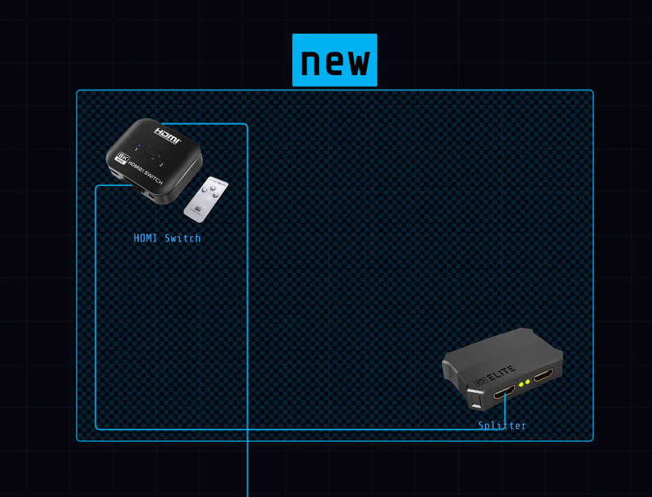
Navigation dans le canevas
Zoom
| Contrôle | Effet |
|---|---|
| Molette de la souris | Zoom avant/arrière centré sur le curseur |
| Touche "+" ou "=" | Zoom avant |
| Touche "-" | Zoom arrière |
| Pincer (toucher) | Zoom |
Panoramique : déplace la vue
| Contrôle | Effet |
|---|---|
| Clic droit + glisser | Panoramique — fonctionne même au-dessus d'un appareil |
| Espace + glisser | |
| Clic gauche + glisser sur une zone vide | Panoramique |
Sélection rectangulaire
Dessinez une sélection rectangulaire pour sélectionner plusieurs appareils à la fois :
| Action | Effet |
|---|---|
| Alt + cliquer et glisser sur le canevas | Dessinez un rectangle de sélection : tous les appareils qu'il touche sont sélectionnés |
| Ctrl + clic (Appareil) | Ajouter ou retirer un seul appareil de la multi-sélection actuelle |
| ⌘ + clic (Appareil) |
Ajuster la vue
Appuyez sur F— ajuste le zoom et la vue pour afficher tous les nœuds à la fois.
Mini-carte
- Situé dans le coin inférieur gauche du canevas
- Rectangle cyan = votre fenêtre actuelle
- Cliquez ou faites glisser n'importe où dans la mini-carte pour naviguer instantanément
Routes de signal
Les routes vous permettent de documenter et de visualiser les chemins de signaux sur votre plan de câblage. Une route trace un signal (vidéo, audio, réseau, etc.) à travers une chaîne de câbles.
Ouverture du panneau Routes
Cliquez sur le bouton ⬡ ROUTES dans l'en-tête. Le panneau d’information de droite s’ouvre. Il reste ouvert pendant que vous travaillez : sa fermeture n'arrête PAS une animation en cours.
Créer une route
- Cliquez sur le bouton + dans l'en-tête puis Nouvelle route .
- Choisissez une couleur
- Choisissez un type de signal : AUDIO, DATA, DMX, LAN, MIDI, NETWORK, POWER, USB, VIDEO — ou Personnalisé pour saisir le nom désiré.
- Cliquez sur Créer .
ℹ Le titre de la route est généré automatiquement du premier au dernier nœud de la chaîne.
Structure de la route
Une route contient :
- Tronc — la séquence principale des segments de câble
- Chemins – segments alternatifs ou de branchement facultatifs (emboîtables, profondeur illimitée). Chaque segment fait référence à un câble et une direction : sens (source→dest.) ou sens inv. (dest.→source).
Chemins
- Les chemins permettent de documenter les branches d'une route : une source qui se distribue vers plusieurs appareils, un chemin de secours, ou tout itinéraire secondaire propre à votre installation. Chaque chemin peut contenir ses propres sous-chemins, pour représenter des architectures à plusieurs niveaux. Dans l'animation, le signal parcourt le tronc et tous les chemins simultanément.
Affectation de câbles à une route
- Après avoir créé un câble : une invite apparaît automatiquement. Choisissez Créer une nouvelle route ou Ajouter à une route existante . Dans le sélecteur, survolez un nom de route pour illuminer ses câbles sur le canevas. Cliquer sur Annuler retire le câble du canevas sans l'affecter à aucune route.
- Pour ajouter un câble existant à une route supplémentaire : sélectionnez le câble — ses routes apparaissent dans le panneau d'information. Cliquez sur + Ajouter à une autre route pour ouvrir le sélecteur de routes.
- Par glisser-déposer dans le panneau Routes : faites glisser n'importe quelle ligne de segment pour la déplacer vers le tronc ou vers un autre chemin.
Gestion des segments et des chemins
| Action | Effet |
|---|---|
| ⇄ sur le segment | Inversez la direction du signal de ce segment. Le titre de la route est mis à jour automatiquement |
| ✕ sur le segment | Supprimer ce segment et son câble (confirmation demandée) |
| Faites glisser la ligne du segment | Déplacez-le à une autre position, dans le tronc ou un autre chemin |
| + Chemin | Ajouter un nouveau chemin de branche à l'intérieur de cette route |
| ✕ sur l'en-tête du chemin | Supprimez ce chemin et tous ses segments |
ℹ Si les extrémités de deux segments consécutifs ne sont pas connectées, un symbole ≠ apparaît. Cela peut se produire après avoir inversé la direction d'un câble (⇄). L'indicateur est uniquement informatif.
Modifier une route
Cliquez sur ✎ sur l'en-tête d’une route pour modifier sa couleur et son type de signal.
Supprimer un segment
Cliquer ✕ sur un segment supprimera son câble — un câble ne peut exister sans route. Le câble concerné est mis en surbrillance sur le canevas. La boîte de dialogue de confirmation indique les deux appareils reliés par ce câble. Cliquez sur Supprimer le câble pour confirmer, ou sur Annuler pour tout laisser inchangé.
Supprimer une route
Cliquer sur ✕ sur l'en-tête d’une route supprime la route et tous ses câbles. Une boîte de dialogue de confirmation répertorie les câbles à supprimer. Cliquez sur Supprimer route + câbles pour confirmer, ou sur Annuler pour tout laisser inchangé.
Animation — suivi du signal
| Action | Effet |
|---|---|
| Double-cliquez sur le titre de la route | Lancement de l’animation : un point lumineux se déplace le long des câbles |
| Cliquez sur le nom de la route | Arrêter l'animation |
| Cliquez sur un canevas vide | Arrêter l'animation |
| Double-cliquez sur un câble sur le canevas | Activer/désactiver l'animation pour toutes les routes contenant ce câble |
ℹ L'en-tête de la route devient jaune pendant l'exécution de l'animation.
États visuels de la route
| État | Apparence | Aperçu |
|---|---|---|
| Inactif | Panneau : en-tête normal / Canevas : câbles normaux | 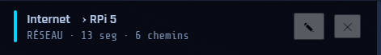 |
| Actif (en cours d'exécution) | Panneau : en-tête jaune + bordure gauche dorée / Canevas : câbles lumineux, autres grisés | 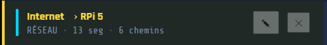 |
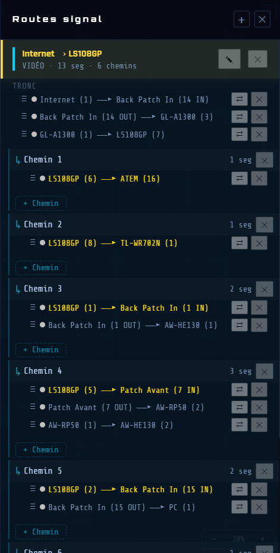
Bibliothèque et catégories
Filtres de la barre latérale gauche
La barre latérale gauche comporte trois sections réductibles : Catégories, Câbles et Zones. Cliquez sur son nom pour la réduire ou la développer. Chaque section possède son propre bouton Tous qui réinitialise le filtre, laissant les autres intacts. La barre latérale s'ouvre lorsque vous survolez la bande gauche et se ferme automatiquement lorsque vous vous en éloignez. Appuyez sur B pour la garder ouverte en permanence. Appuyez à nouveau pour revenir au mode automatique.
Rubrique Catégories
- Affiche uniquement les catégories qui ont au moins un appareil sur le canevas.
- Cliquez sur une catégorie : les appareils principaux apparaissent en pleine opacité sur le canevas ; les appareils fantômes (attachés à un primaire) apparaissent légèrement ; tous les autres sont cachés.
Rubrique Câbles
- Affiche uniquement les types de câbles actuellement utilisés sur le canevas.
- Filtre binaire : les appareils dotés d'au moins un câble du type sélectionné apparaissent en pleine opacité ; tous les autres sont cachés. Pas d'appareil fantôme : le filtre est exclusif.
Rubrique Zones
- Affiche toutes les zones nommées définies dans le projet.
- Cliquez sur une zone : les appareils dont le centre est à l'intérieur de la zone apparaissent en pleine opacité ; leurs câbles (même ceux sortant de la limite de zone) sont indiqués ; les étiquettes de texte restent toujours visibles ; tout le reste est caché.
Combinaison de filtres et d'autres comportements
- Catégorie + Câble combinés : primaires = appareils de la catégorie sélectionnée et disposant d'un câble du type sélectionné ; fantômes = autres catégories connectées à un primaire via ce type de câble.
- La sélection d'un appareil suspend tous les filtres : le canevas passe à l'affichage de sélection normal (éclairé/assombri) jusqu'à ce que vous désélectionniez.
- Barre de recherche : filtrez les appareils sur le canevas par nom. Cliquez sur un résultat pour le sélectionner et le centrer.
Catégories par défaut
Alimentation
Audio
Caméra
Capture
Conversion
Écran
Externe
Personnalisé Hub USB
Mélangeur
Ordinateur
Rack
Réseau
Stockage
Video
ℹ Des catégories personnalisées peuvent être créées lors de l'ajout d'un appareil — sélectionnez Personnalisé... dans la liste déroulante des catégories.
Câbles par défaut
Dante
DC
DisplayPort
HDMI
Jack 3.5
Jack 6.35
MADI
Optique
RCA/Cinch
Personnalisé… RJ45
SDI
SDI-F
Speakon
Thunderbolt
USB-A
USB-C
USB-DC
XLR
Bibliothèque d'appareils
Votre bibliothèque est personnelle et persiste entre les projets. Les appareils ajoutés avec ⬡ Nouvel appareil sont enregistrés dans votre bibliothèque et disponibles dans les projets futurs.
Renommer une catégorie personnalisée
Double-cliquez sur son nom dans la barre latérale gauche → éditez le nom → confirmez.
Supprimer une catégorie personnalisée
Double-cliquez sur son nom dans la barre latérale gauche → cliquez sur ✕.
⚠ Tous les appareils de cette catégorie seront définitivement supprimés.
Ajouter un type de câble personnalisé
Lors de la configuration des ports d'un appareil → liste déroulante Type → sélectionnez Personnalisé… en bas de la liste. Saisissez le nom du nouveau type → confirmez. Le nouveau type est immédiatement disponible et apparaît dans la section Câbles de la barre latérale gauche.
Renommer un type de câble personnalisé
Double-cliquez sur son nom dans la barre latérale gauche → éditez le nom → confirmez.
Supprimer un type de câble personnalisé
Double-cliquez sur son nom dans la barre latérale gauche → cliquez sur ✕.
⚠ Tous les câbles de ce type seront définitivement supprimés.
Édition des couleurs
La page Édition des couleurs permet de personnaliser les couleurs des catégories, des types de câbles et des zones du projet en cours. Les modifications s’appliquent en temps réel sur le canevas.
Ouvrir la page
Menu → Édition → Couleurs…
Trois colonnes
La page est divisée en trois colonnes : Catégories, Câbles et Zones.
Cliquez sur une ligne pour ouvrir son sélecteur de couleur. Cliquez à nouveau pour le refermer.
Colonne Catégories
Liste toutes les catégories présentes dans le projet.
Sélecteur de couleur :
- 10 teintes prédéfinies
- Roue de couleur pour une valeur libre
La couleur s’applique immédiatement.
Colonne Câbles
Liste tous les types de câbles — natifs et personnalisés.
Style de trait
Liste tous les styles de trait : Continu, Tirets ou Longs tirets.
La couleur et le style s’appliquent immédiatement à tous les câbles de ce type sur le canevas.
Colonne Zones
Liste toutes les zones nommées du projet en cours.
Le sélecteur comporte deux onglets :
| Onglet | Ce qu’il modifie |
|---|---|
| Intérieur | Couleur de remplissage de la zone. |
| Bordure | Couleur et style de trait de la bordure. |
Le style de trait (Continu, Tirets, Longs tirets) n'est disponible que sur l'onglet Bordure.
ℹ Si le projet ne contient aucune zone, la colonne Zones affiche un message vide. Créez d’abord une zone (voir Zones).
Fermer la page
| Bouton | Effet |
|---|---|
| Appliquer | Ferme la fenêtre et conserve toutes les modifications. |
| Annuler | Ferme la fenêtre et annule toutes les modifications effectuées depuis l’ouverture. |
ℹ Chaque modification de couleur est annulable individuellement via Ctrl + Z.
Sous-projets
ℹ Cette fonctionnalité est réservée à la version Wires PRO.
Un sous-projet permet d'importer le contenu d'un fichier .wires existant dans le projet en cours. Les appareils, câbles, routes de signal et zones du fichier importé sont placés sur le canevas actuel comme un bloc indépendant, encadré par une zone colorée portant le nom du projet source.
Importer un sous-projet
Menu Fichier → Importer un projet…
Une boîte de dialogue s'ouvre : sélectionnez le fichier .wires à importer. Un aperçu en pointillés apparaît sous le curseur, représentant l'emprise du contenu importé.
Déplacez le curseur. L'aperçu passe en rouge si l'emplacement chevauche des appareils existants — déplacez-le jusqu'à ce qu'il redevienne bleu. Cliquez pour placer
Si aucun espace libre n'est visible, approchez le curseur d'un bord de la fenêtre : le canevas défile automatiquement et ralentit dès qu'un emplacement valide est trouvé. Appuyez sur Échap ou cliquez sur ✕ Annuler dans la bannière pour annuler l'import.
Ce qui est importé
- Appareils (hors nœud Internet)
- Câbles internes au projet importé
- Routes de signal
- Zones
Zone de sous-projet
Une zone englobante bleue est automatiquement créée autour du contenu importé, nommée d'après le titre du projet source. Sélectionnez cette zone pour accéder aux actions dans le panneau d'information de droite :
Détacher (conserver le contenu) — la zone est supprimée, le contenu reste sur le canevas comme éléments normaux.
Supprimer + tout le contenu — supprime la zone et tout ce qu'elle contient.
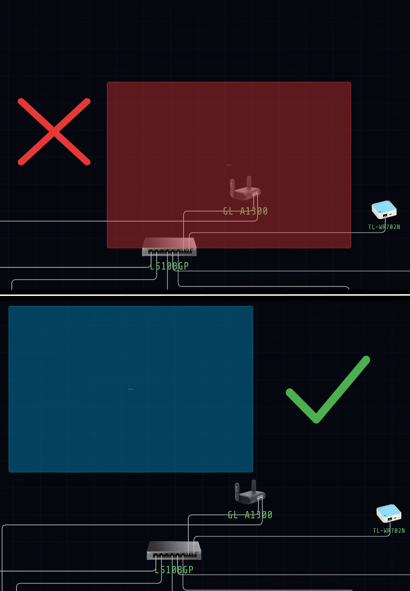
Raccourcis clavier
Général
| Raccourci | Action |
|---|---|
| Ctrl + N | Nouveau projet |
| ⌘ + N | |
| Ctrl + O | Ouvrir le fichier |
| ⌘ + O | |
| Ctrl + S | Enregistrer |
| ⌘ + S | |
| Ctrl + ⇧ + S | Enregistrer sous |
| ⌘ + ⇧ + S | |
| Ctrl + Z | Annuler |
| ⌘ + Z | |
| Ctrl + ⇧ + Z | Rétablir |
| ⌘ + ⇧ + Z | |
| Ctrl + Y | Rétablir (alternatif) |
| ⌘ + Y | |
| Echap | Quitter le mode câble / fermer modal / tout désélectionner |
| B | Basculer la barre latérale gauche |
Sélection et édition
| Raccourci | Action |
|---|---|
| Supprimer ou Retour arrière | Supprimer l'élément sélectionné (nœud, câble, texte ou zone) |
| ⇧ + clic (près du point final) | Sélectionner la borne tronquée d'un câble |
| ↑ ↓ ← → (segment sélectionné) | Changer la direction de sortie du segment |
| Ctrl + C / Ctrl + X / Ctrl + V | Copier / Couper / Coller |
| ⌘ + C / ⌘ + X / ⌘ + V | |
| Ctrl + E | Export PDF |
| ⌘ + E | |
| Ctrl + clic | Ajouter/retirer un appareil de la sélection |
| ⌘ + clic |
Navigation dans le canevas
| Raccourci | Action |
|---|---|
| F | Ajuster tous les nœuds en vue |
| F11 | Plein écran |
| + ou = / - | Zoom avant / Zoom arrière |
| Alt + cliquer et glisser sur le canevas | Dessiner un rectangle de sélection |
| Clic droit + glisser | Panoramique — fonctionne même au-dessus d'un appareil |
| Espace + glisser |
Exporter
Exporter le canevas → PDF
Menu Fichier → Exporter le canevas → PDF… (raccourci clavier : Ctrl + E)
- Un panneau d'export s'ouvre sur la droite.
- Choisissez la couleur de fond (Blanc ou Sombre), la résolution (75 / 150 / 300 / 600 DPI).
- Cliquez sur Parcourir... pour choisir le fichier de destination.
- Cliquez sur Exporter le PDF pour générer, ou Annuler pour fermer le panneau.
- Génère un paysage A4 PDF de l'ensemble du canevas : appareils, câbles, étiquettes et zones tels qu'affichés.
- Le PDF s'ouvre automatiquement après l'enregistrement.
- ℹ La résolution d'export est sélectionnable avant l'enregistrement : 75 dpi est disponible dans toutes les versions. Les résolutions supérieures (150, 300 et 600 dpi) sont réservées à Wires PRO.
Exporter la patch list → PDF
Menu Fichier → Exporter la patch list → PDF…
Génère un document portrait A4 répertoriant tous les appareils et câbles du projet :
| Section | Sommaire |
|---|---|
| En-tête | Titre du projet et date de génération. |
| Appareils | Regroupés par catégorie dans l'ordre de la barre latérale gauche. Chaque ligne : nombre (N×), nom de l'appareil, colonne de case à cocher □ vide à droite pour la vérification physique. |
| Rayure zébrée | Arrière-plan clair en alternance sur une ligne sur deux de l'appareil pour plus de lisibilité. |
| Câbles | Répertoriés après les appareils, regroupés par type de câble avec nombre total par type. |
| Avec zones | Si des zones sont définies dans le projet, les appareils sont d'abord regroupés par zone ; suivi d'une section récapitulative “Total — All Zones” à la fin. |
ℹ Le nœud Internet est exclu de la liste des patchs. Les cases □ sont destinées à être utilisées sur une copie imprimée — elles ne peuvent pas être cochées à l'intérieur du PDF.
- Une boîte de dialogue Enregistrer sous s'ouvre : choisissez le fichier de destination.
- Le PDF s'ouvre automatiquement après l'enregistrement.
Exporter la visionneuse interactive → HTML
Wires peut exporter l'intégralité de votre plan de câblage sous la forme d'un fichier HTML unique et autonome qui s'ouvre dans n'importe quel navigateur Web — aucune installation n'est requise. Contrairement à un PDF statique, la visionneuse interactive vous permet d'explorer le plan, d'inspecter chaque appareil et chaque câble et d'exécuter les traces animées du routage du signal, exactement comme vous le feriez à l'intérieur du Wires lui-même. C’est l’une des fonctionnalités les plus puissantes de l’application.
Générer l'export
Menu Fichier → Exporter la visionneuse interactive → HTML…
- Une boîte de dialogue Enregistrer sous s'ouvre : choisissez le dossier de destination et le nom du fichier.
- Le résultat est un fichier .zip contenant un fichier .html et un dossier assets/ avec les images des appareils. Le .html embarque tous les éléments du projet : appareils, câbles, zones, étiquettes de texte et routes de signal avec leurs données d'animation complètes.
- Le fichier est entièrement autonome et portable : aucune connexion Internet n’est requise pour l’ouvrir ou le partager. Envoyez-le par e-mail, hébergez-le sur un lecteur ou déposez-le sur un serveur.
Fonctions interactives dans la visionneuse
La visionneuse préserve l’expérience interactive complète de Wires. Chaque élément est cliquable et entièrement explorable :
| Action | Effet dans la visionneuse |
|---|---|
| Cliquez sur un appareil | Ouvre le panneau d'information de droite sur l'appareil : nom, catégorie et liste complète des câbles qui y sont connectés. |
| Cliquez sur un câble | Ouvre le panneau d'information de droite sur le câble : type de signal, appareil source, appareil de destination. Si le câble appartient à un ou plusieurs routes de signal, des puces de route apparaissent : cliquez sur une puce pour ouvrir le panneau Routes et lancer l'animation de cette route. |
| Double-cliquez sur un câble | Bascule le flux du signal animé pour tous les routes utilisant ce câble. Une particule lumineuse se déplace le long du tracé du câble de la source à la destination. Double-cliquez à nouveau pour arrêter. |
| Cliquez sur un canevas vide | Arrête toute animation en cours et restaure tous les câbles et appareils à leur apparence normale. |
| Panneau Routes | Cliquez sur le bouton ⬡ ROUTES (barre supérieure) pour ouvrir le panneau. Double-cliquez sur le titre d’une route pour démarrer l'animation. Cliquez une fois sur le titre pour l'arrêter. |
| Zoom | Molette de la souris : effectue un zoom avant et arrière centré sur la position du curseur. Plage : 0,15× à 4×. |
| Panoramique | Faites un clic gauche + faites glisser sur un canevas vide. Le clic central + glisser fonctionne également. |
| Touche F | Ajuster la vue : zoome et centre le canevas pour afficher tous les appareils en même temps. |
| Mini-carte | Coin inférieur gauche. Affiche une vue plongeante du canevas. Cliquez n’importe où à l’intérieur pour naviguer instantanément. |
| Filtre de catégorie/type de câble | Barre latérale gauche : cliquez sur une catégorie ou un type de câble pour masquer tout le reste. Cliquez à nouveau sur le filtre actif (ou Tous ) pour l'effacer. |
Cas d'utilisation - partager, intégrer, présenter
La visionneuse HTML est le format de livraison idéal lorsque Wires ne peut pas être installé sur la machine du destinataire :
- Intégration de site Web ou intranet : copiez le fichier .html sur votre serveur Web ou intranet. Les visiteurs parcourent le plan interactif complet dans n'importe quel navigateur, cliquent sur les appareils et les câbles pour plus de détails et regardent les routes de signal s'animer, sans aucun logiciel à installer.
- Partage d'équipe ou de client : envoyez le fichier par e-mail ou par transfert de fichier. Le destinataire l'ouvre dans son navigateur et obtient une copie en direct entièrement navigable de votre plan. Bien plus informatif qu'un PDF plat : ils peuvent cliquer sur n'importe quel appareil ou câble pour obtenir des détails complets et regarder le trajet du signal s'animer en temps réel.
- Présentation en direct : ouvrez le fichier HTML sur un projecteur ou un écran partagé. Cliquez sur chaque appareil pour afficher ses spécifications, double-cliquez sur un câble pour animer la route et guidez les parties prenantes de manière interactive tout au long de la chaîne de signal.
- Archive de documentation du projet : incluez le fichier .html à côté de la source .wires dans votre dossier de projet. Il reste entièrement lisible dans n'importe quel navigateur des années plus tard, sans dépendance de version.
ℹ La visionneuse est en lecture seule. Toutes les fonctionnalités interactives de navigation et d'animation fonctionnent exactement comme dans Wires, mais le plan ne peut pas être modifié : aucun appareil ne peut être déplacé, créé ou supprimé.
Routage professionnel du signal AV
Version 1.0.0
26 juin 2026
© 2026 Alkoda. Tous droits réservés.